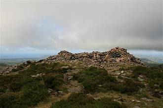
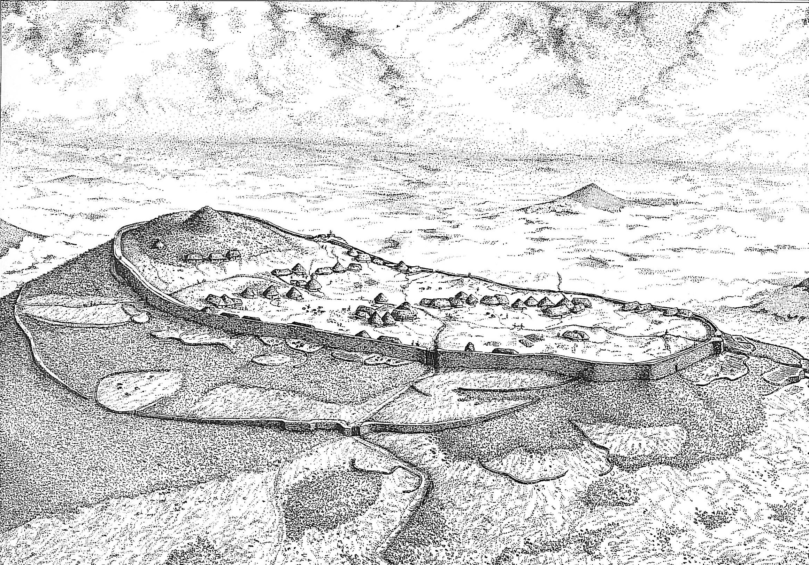

Tre'r Ceiri depuis le sommet

Ce qui est spécial à propos de Tre'r Ceiri, c'est l'énorme mur de pierre autour de la forteresse, et le fait que les huttes et les bâtiments intérieurs sont en si bon état.
The cairn at the top of Tre'r Ceiri
Depuis le sommet on peut voir le plan des huttes à l'intérieur. Il y a des sentiers relativement bons ici, qui forment un circuit autour de la forteresse.
An artist's idea of Tre'r Ceiri
Le mur autour de Tre'r Ceiri construit en pierre sèche est d'une épaisseur entre 2 à 4.5 mètres et s'élève à une hauteur de 3 mètres dans certaines parties de l'extérieur du fort. Au sommet du mur il y avait un chemin de ronde, comme dans un château médiéval, de sorte qu'il y avait un sentier pour que les « soldats » pouvaient assurer la surveillance.
 Looking up at the cairn
Looking up at the cairn
À l'intérieur du mur il y a environ 150 huttes, la plupart d'entre elles regroupées en groupes distincts. Les huttes circulaires étaient des habitations, et beaucoup ont été divisés, peut-être pendant l'utilisation ultérieure de l'endroit à l'époque romaine. Les huttes rectangulaires étaient des ateliers et des réserves.
Au sommet il y a un cairn de pierres datant de l'âge du bronze, au deuxième millénaire avant Jésus-Christ, qui semble marquer la tombe de quelqu'un. Il y a des cairns similaires à d'autres endroits, le sommet de Mynydd Rhiw par exemple, ce qui suggère que ces montagnes ont été des sites d'une grande importance, et peut-être d'une importance spirituelle, pour les gens pendant des siècles avant la construction de l'enceinte fortifiée. Le fait que le cairn ait survécu suggère que les résidents de l'âge du fer l'ont respecté et se sont abstenus de réutiliser les pierres pour construire leurs huttes.